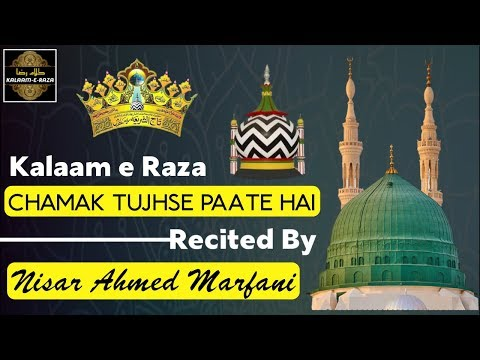

POITRY OF ALA HAZRAT
- WO KAMAL E HUSN E HUZOOR HAIN
- CHAMAK TUJSE PAATE
WO KAMAL E HUSN E HUZOOR HAIN
Wo Kamal E Husn E Huzoor Hai
Kay Gumaan-e-Naqs Jahaan Naheen
Yay-hee Phool Khaar Say Duur hai
Yay-hee Sham’a Hai Kay Dhu-aan Naheen
Do Jahan Ki Behtariyan Nahi
Ke Amaniye Dilo Jaan Nahi
Kaho Kya Hain Wo Jo Yaha Nahi
Magar Ik Nahi Ki Wo Haan Nahi
BaKhuda Khuda Ka Yay-hee Hay Darr
Nahin Aur Koi Maffar Maqqar
Joe Wahaan Say Ho Yaheen Aakay Ho
Joe Yahaan Naheen Tou Wahan Naheen
Main Nisaar Tere Kalaam Par
Mili Yun To Kisi Ko Zabaan Nahi
Wo Sikhan Hai Jisme Sukhan Na Ho
wo Bayaan Hain Jiska Bayaan Nahi
Hain Unhi Ke Noor Se Sab Ayaan
Hain Unhi Ke Jalwo Me Sab Nihaan
Bane Subha Taabishe Mehar Se Rahe
Peshe Mehar Yeh Jaan Nahi
Wahi Noor E Haq Wahi Jille Rab
Hain Unhi Se Sab Hain Unhi Ka Sab
Nahi Unki Milk Mein Aasmaan
Ki Jameen Nahi Ki Jamaan Nahi
Teyray Aagay Youn Hayn Dabbay Lachay
Fu-saha A’rab Kay Barray Barray
Ko-ee Jaanay Muh Mayn Zubaan Naheen
Naheen Balkay Jism Mein Jaan Naheen
Wo-hee Noor-e-Haq Wo-hee Zillay Rub
Hai Unhee Say Sub Hai Unhee Ka Sub
Naheen Unkee Milk Meyn Aasmaan
Ke Zameen Nahin Ke Zamaan Naheen
Wo-hee Laa Makaan Kay Makeen Huay
Sar-e-‘Arsh Takht Nasheen Huay
Wo Nabee Hai Jiss Kay Hain Yay Makaan
Wo Khuda Hai Jiss Ka Makaan Naheen
Sar-e-‘Arsh Per Hai Teree Guzar
Dil-e-Farsh Per Hai Teree Nazar
Malakoot-o-Mulk Mayn Ko-ee Shay Naheen
Wo Tujh Pay A’yaan Naheen
Karoon Teray Naam Pay Jaan Fida
Na Buss Aik Jaan Dou Jahaan Fida
Dou Jahaan Say Bhee Naheen Jee Bharaa
Karoon Kiya Karoroon Jahaan Naheen
Karoon Madhay Ahle-e-Doel Raza
Parray Iss Bala Meyn Meyree Balaa
Meyn Gada Hoon Apnay Kareem Ka
Meyra Deen Paara-e-Naan Naheen
CHAMAK TUJSE PAATE

Chamak tujhse paate hai sab paane waale
Mera dil bhi chamka de chamkane waale
Barasta nahi dekh kar Abre Rehmat
Badon par bhi barsa de barsa ne waale
Mera Dil bhi chamka de chamkane waale
Chamak tujhse paate hai sab paane waale
Mai mujrim hu Aaqa mujhe saath le lo
Ke raste me hai jaa baja thaane waale
Mera Dil bhi chamka de chamkane waale
Chamak tujhse paate hai sab paane waale
Tu zinda hai Wallah tu zinda hai Wallah
Mere chasme aalam se chup jaane waale
Mera Dil bhi chamka de chamkane waale
Chamak tujhse paate hai sab paane waale
Madine ki khitte Khuda tujh ko rakhe
Gareebo faqeero ke tahraane waale
Mera Dil bhi chamka de chamkane waale
Chamak tujhse paate hai sab paane waale
Raza nafs dushman hai dum me na aana
Kaha tu ne dekhe hai chand raane waale
Chamak tujhse paate hai sab paane waale
Mera dil bhi chamka de chamkane waale